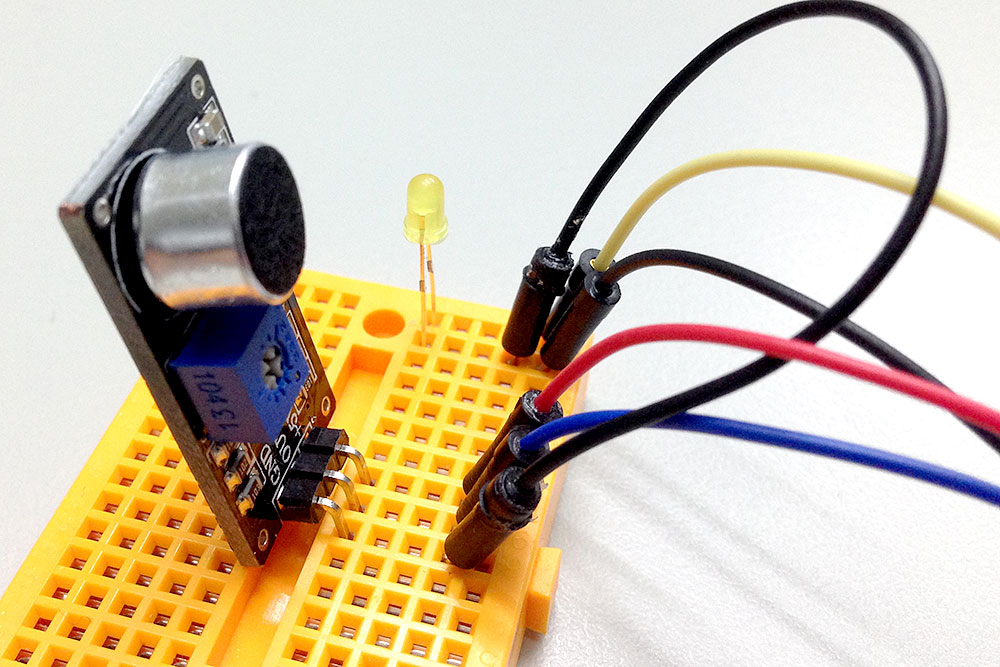
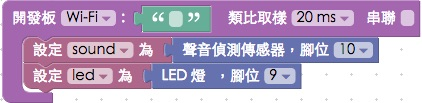
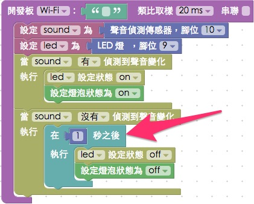

教學範例 12：聲音偵測點亮 LED 與網頁燈泡
聲音偵測傳感器類似一個微型的麥克風，不過它的功能並不如麥克風一般的強大，主要作用為偵測是否有聲音，在聲音偵測傳感器上頭有一個小型的十字旋鈕，可以用螺絲起子旋轉調整零敏度，靈敏度如果太高，可能連同一些風吹草動的聲音都會偵測到，靈敏度過低可能拍手拍得再大聲都偵測不到，而且由於聲音傳感器本身有傳輸的時間差，因此在接收到聲音後也會有些微的延遲現象。這個範例將會利用聲音偵測傳感器，當偵測到有聲音，就自動點亮 LED 燈，同時也會點亮網頁裡頭的燈泡。
範例影片展示
影片對應範例：https://blockly.webduino.io/?page=tutorials/sound-2
接線與實作
首先把聲音偵測傳感器和 LED 燈接在麵包板上，聲音偵測傳感器的 +5V 接在開發板的 VCC，GND 接在 GND，Out 則接在 10 的腳位，然後再用電線將 GND 引出給 LED 的短腳使用，LED 的長腳接在 9 的腳位。
馬克一號接線示意圖：

Fly 接線示意圖：

實際接線照片：


Webduino Blockly 操作解析
打開 Webduino Blockly 編輯工具 ( https://blockly.webduino.io )，因為這個範例會用網頁「點擊燈泡」來跟 LED 燈互相搭配，所以要先點選右上方「網頁互動測試」的按鈕，打開內嵌測試的網頁，用下拉選單選擇「點擊燈泡」。

把開發板放到編輯畫面裡，填入對應的 Webduino 開發板名稱，開發板內放入聲音偵測積木，名稱設定為 sound，腳位設定為 10，再放入 LED 積木，名稱設定為 led，腳位設定為 9。

接著放入有偵測到聲音變化的積木，如果有偵測到，就點亮 LED 燈同時也把網頁裡的燈泡圖片換成發亮的燈泡。

因為偵測到聲音和沒有偵測到聲音有可能會同時發生 ( 因為可能像拍手一樣，只發出一個聲響後就停了 )，所以我們要多放入一個「沒有」偵測到聲音變化的積木，延遲一秒後觸發動作，這樣如果一秒鐘之後沒有聲音，就會把 LED 燈和燈泡熄滅。

完成後，確認開發板上線 ( 點選「檢查連線狀態」查詢 )，點選紅色的執行按鈕，對著聲音偵測傳感器拍手或發出聲音，就會看到 LED 燈和燈泡圖片亮起。( 解答：https://blockly.webduino.io/#-K7ACr4VwFNkORu2-3fS )
程式碼解析 ( 完整程式碼、檢查連線狀態 )
HTML 的 header 引入 webduino-all.min.js，目的在讓瀏覽器可以支援 WebComponents 以及 Webduino 所有的元件，如果是用 Blockly 編輯工具產生的程式碼，則要額外引入 webduino-blockly.js。
<script src="https://webduino.io/components/webduino-js/dist/webduino-all.min.js"></script>
<script src="https://webduinoio.github.io/webduino-blockly/webduino-blockly.js"></script>
接著看到 HTML 的 body 裡頭，放入一個 id 為 demo-area-02-light 的圖片區域，裡面含有兩張分別是亮起的燈泡與不亮的燈泡圖片，目的在於點選的時候，圖片也會從不亮的燈泡轉變為亮起的燈泡。
<div id="demo-area-02-light" class="off">
<img src="https://blockly.webduino.io/media/off.png" id="demo-area-02-off">
<img src="https://blockly.webduino.io/media/on.png" id="demo-area-02-on">
</div>
控制燈泡圖片亮暗的是使用 CSS 的方式，用圖片顯示的切換 display:none; 來達到相關效果，下面是 CSS 的程式碼。
#demo-area-02-light img{
height:200px;
display:none;
}
#demo-area-02-light.on #demo-area-02-on{
display:inline-block;
}
#demo-area-02-light.off #demo-area-02-off{
display:inline-block;
}
JavaScript 使用 on 這個方法來偵測，當第一個參數是 detected 就表示有偵測到聲音，就去做裡面的行為，如果是 ended 就是沒有偵測到有聲音，就把燈泡和 LED 給熄滅，燈泡圖片的熄滅純粹使用 className 來做切換。
var sound;
var led;
boardReady('', function (board) {
board.samplingInterval = 20;
sound = getSound(board, 10);
led = getLed(board, 9);
sound.on("detected",function(){
led.on();
document.getElementById("demo-area-02-light").className = "on";
});
sound.on("ended",function(){
setTimeout(function(){
setTimeout(function () {
led.off();
document.getElementById("demo-area-02-light").className = "off";
}, 1000);
},300);
});
});
以上就是利用聲音偵測傳感器，來偵測有無聲音變化並且點亮 LED 燈。
完整程式碼：http://bin.webduino.io/padab/edit?html,css,js,output
解答：https://blockly.webduino.io/#-K7ACr4VwFNkORu2-3fS
聲音偵測傳感器的延伸教學：
如果您還想了解更多，可以參考：
2. Blockly 教學：https://goo.gl/Y8sRkl
3. 產品總覽：https://webduino.io/buy.html
4. 露天賣場：http://goo.gl/0Dj9ip